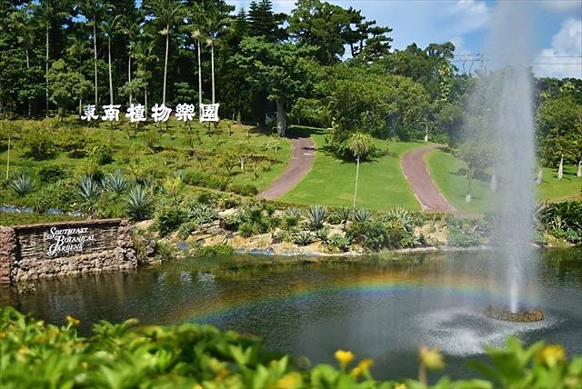

沖縄市で楽しく遊ぶ２
東南植物楽園

東南植物楽園（とうなんしょくぶつらくえん）は,
沖縄県沖縄市知花に所在する日本の植物園、博物館相当施設である。年間を通して南国の景色が広がり、
約1,300種5万株以上の植物を有する日本最大級の屋外植物園。
- 1968年3月 現在の農場エリア（美の里わくわくファーム）に大林農園として創業。「東南楽園」と命名。
- 1970年2月 有限会社東南植物楽園を設立。
- 1973年 「東南楽園」を「東南植物楽園」に改名。
- 1975年 沖縄海洋博を機に水上楽園エリアを開設。
- 1981年12月 沖縄県博物館相当施設に認定（県内第1号）。
- 2002年9月 園内にあるレストランを大改装し、レストラン事業を開始（ガーデンレストラン ボタニカ）。
- 2005年2月 オリジナルファッションブランド「木花～Bocca」プロジェクトスタート。
- 2009年1月 アグリビジネスを開始。花卉類・野菜類の生産販売を本格稼動。
- 2010年12月29日 事業譲渡交渉の行き詰まりのため休園。
- 2013年3月 県内で医療法人やホテルなどを経営するタピックグループが東南植物楽園の全株式を取得し、
事業譲渡が成立。
- 2013年7月6日 営業再開。
- 2018年4月14日 琉球金宮観音菩薩像（像高約25ｍ）の一般公開を開始。
- 2018年9月30日 台風24号の影響により琉球金宮観音菩薩像が倒壊
東南植物楽園
〒904-2143 沖縄県沖縄市知花2146
東南植物楽園
戻る